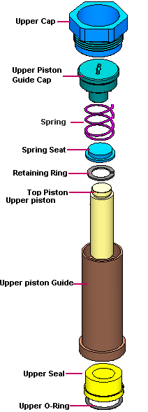
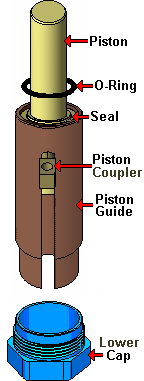
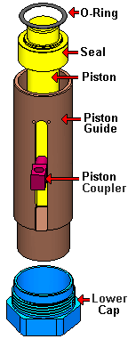
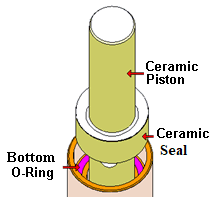

This procedure describes how to clean the components of the precision, sample, and wash pumps.
Refer to Fluidic Pump Rebuild videos on the Box to supplement this procedure:
Box\Service Documentation - Dx\Immunoassay\DxI\Videos
Caution: Only the videos with the current version of the chapter as seen in the title can be used as a supplement material to the field service manual.
Clean the precision, sample, and wash pumps including the ceramic seals, pistons and springs when precision, sample or wash pump errors occur:
Process monitoring errors
Pump slippage errors
Unexpected height and insufficient sample errors
If the errors are across all four precision pumps, then clean the sample pump.
If the errors are only on one precision pump, then troubleshoot that pipettor circuit.
Imprecision issues on only one precision pump.
Note: Replacing the pump belt may also resolve these errors.
Caution:
When handling the piston and ceramic seal, use powder-free gloves to avoid any contamination of the piston and ceramic seal. Any gritty material in the piston and ceramic seal will likely affect pump operation.
If cleaning multiple pumps, clean and assemble one pump at a time to avoid mixing the o-rings between pumps. The current pump design (light tan piston guide and two o-rings on either side of the ceramic seal) has different o-rings than the earlier designs. Do not intermix the o-rings.
Reference Graphics:
Figure 253: Upper piston and seal - precision pumps only

Figure 254: Lower piston and seal - open piston guide (original design)

Figure 255: Lower piston and seal - closed guide and nonremovable piston

Figure 256: Lower piston and seal - floating seal and nonremovable piston (current design)
Note:
Older pumps can have an open-end lower piston guide, while newer pumps have a closed-end lower piston guide.
Instruments that have Mod 10035 completed, have a sample pump with the closed guide and non-removable piston with an extra o-ring underneath the ceramic seal.
Disassemble the lower pump
Using gloved hands, remove the pump from the instrument.
Remove the screw securing the piston coupler to the home flag.
Remove the o-ring, lower piston, ceramic seal, and piston guide from the acrylic housing.
Inspect the piston and ceramic seal.
Inspect all of the removed parts, and replace any of the parts that are damaged, worn, or defective.
Inspect the belt that is located inside the pump housing, and replace the belt if it is damaged.
Clean the piston and the ceramic seal.
Note: A sonicating bath filled with DI water can be used to remove piston/seal binding prior to cleaning. It is recommended to sonicate the piston-guide and seal for up to 5-10 minutes depending on the degree of binding between piston-guide or piston/seal.
Place piston and seal (p/n A52621) into a sonicating bath filled with DI water.
Refer to the Sonicating Bath Manufacturer's instruction manual for the specific operating instructions.
Sonicate for up to 5 minutes in a bath with power output up to 135W.
Test piston-guide and piston-seal interaction for binding.
If there is no binding, rinse piston and seal with fresh DI water, dry with kim wipe and reassemble pump.
If there is still binding, return parts to sonicating bath for up to 5 additional minutes.
Test piston-guide and piston and seal with fresh DI water, dry with kim wipe and reassemble pump.
If binding is still present, order new piston seal kit.
Place the o-rings and the ceramic seal in a container of DI water.
Newer pumps have two o-rings with the lower piston guide.
Submerge the piston guide in a container of DI water, moving the piston in the guide for a total of ten cycles.
Remove the piston guide from the DI water and clean (rub) the piston with gloved fingers.
Rinse the piston end and your gloved fingers in the DI water, and then repeat the cleaning and rinsing.
Dry the piston and the piston guide using canned air or a lint-free tissue.
Remove the ceramic seal from the DI water. Clean the inner diameter of the ceramic seal by placing a gloved finger into the inner diameter and then rotating the ceramic seal two full rotations.
Repeat the previous step from the opposite end of the ceramic seal.
Rinse the ceramic seal and your gloved finger in the DI water, and then repeat the process one more time.
Dry the ceramic seal using canned air or a lint-free tissue.
Wipe the piston and seal with an alcohol wipe and allow to dry. Only use alcohol on ceramics.
For the lower pump only: If the pump contains parts with the current design - floating seal (see reference picture), place the bottom o-ring on the tan guide beneath the ceramic seal. Seat the o-ring between the raised circle and the inner wall of the guide.
Figure 257: Lower piston seal guide

Place the ceramic seal on the piston and guide. Gently rotate the ceramic seal, using only the weight of the ceramic seal to self-align to the piston outside diameter and slide the ceramic seal onto the piston.
Caution: The flat side of the ceramic seal faces downward.
Assemble the lower pump.
Using downward pressure on the ceramic seal, gently slide the ceramic seal up and down the piston.
The movement should feel smooth. If the movement is not smooth, rotate the ceramic seal to find the smoothest position.
Move the piston to the downward position so the piston coupler is near the bottom of the piston guide slot.
Place the o-ring on the ceramic seal captivated by the raised portion and carefully insert the assembly into the pump housing.
Caution:
During assembly, confirm that the o-ring remains in the correct position to provide adequate seal against the pump housing.
Hold the pump in an upright position when inserting the assembly into the pump housing. Assembling the pump in a sideways position can cause improper o-ring seating and pump delivery problems.
Secure the lower cap.
Caution: The black lower cap tightness is critical to correct pump operation. A loose lower cap can cause pump leaks or ceramic seal wobble.
Note: Verify smooth piston movement by grasping belt or using allen wrench to move belt flag up and down.
If a torque wrench and the 1-1/16-in socket tool are available, secure the lower cap:
Previous design: 12 in-lb (1.4 N•m).
New pump reliability design: 10 in-lb (1.1 N•m).
If a torque wrench is not available, secure the lower cap on the bottom of the pump to hand tight. Use a wrench to rotate the black lower cap an additional 30°.
Insert the tip of a small straight-slot screwdriver into the gap between the home flag and the acrylic housing. Install the flag screw and tighten the screw to secure the home flag to the piston coupler.
Caution:
Do not rotate the home flag to the side when securing the flag screw. A tilted flag can cause pump motion or backlash errors.
Do not get red Loctite residue into the piston guide slot. Use canned air to remove any visible loctite residue.
Note: Verify smooth piston movement by grasping belt or using allen wrench to move belt flag up and down.
If cleaning a PRECISION pump, clean the upper piston and ceramic seal.
Remove the upper cap on the top of the pump.
Remove the top piston guide cap.
Remove the spring, spring seat, retaining ring, piston, ceramic seal, and o-ring.
Inspect the spring, spring seat, and retaining ring, and clean them if necessary.
Repeat for piston, ceramic seal, and o-ring. Clean with DI water. Dry with lint free tissue or canned air. Clean piston and seal with alcohol swab and allow to dry.
Assemble the upper pump.
Place the o-ring on the ceramic seal captivated by the raised portion and carefully insert the assembly into the pump housing.
Caution:
During assembly, confirm that the o-ring remains in the correct position to provide adequate seal against the pump housing.
Hold the pump in an upright position when inserting the assembly into the pump housing. Assembling the pump in a sideways position can cause improper o-ring seating and pump delivery problems.
Place the retaining ring, spring seat, and spring on the piston in the piston guide.
Replace the upper piston guide cap.
Secure the upper piston guide to the top of the pump with the black upper cap. Finger tighten the upper cap.
Replace the pump belt (Optional).
Note: The referenced procedure describes how to correctly install and adjust Tensioner Mounting Bracket.
Verify that the pump is assembled correctly and that the system meets specifications.
Home each pump several times and confirm that the pump moves correctly.
From the priming screen of the user interface, disable process monitoring and prime the sample pipettor, reagent pipettors, and aspirate and dispense probes five times each.
Verify that all of the air is removed from the precision pumps, sample pump, wash pumps, and fluidics tubing and probes.
Verify system operation.
Perform system verification as stated in the Verification of Service Repair document .